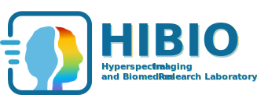

 🎓 研究生生存法則
掌握論文閱讀技巧、Meeting討論策略，以及完整的畢業攻略指南
🎯 論文完成階段
📚 論文閱讀技巧
💬 Meeting技巧
📚 論文閱讀技巧
提高閱讀效率和理解深度的實用技巧
快速瀏覽
在深入閱讀之前，先快速瀏覽論文的標題、摘要、結論部分，以了解研究的主題和自己的研究是否有可以引用、借鑑之處。
重點標記
在閱讀過程中，標記出重要的段落和關鍵詞，後續的回顧和整理會比較輕鬆。
卡片盒讀書法
多利用貼標籤hashtag等方式可以把論文分類整理，方便日後查找和引用相似主題的論文，也又助於形成自己的脈絡。
做筆記
必須要把論文內化成自己的東西用自己的語言來說，並嘗試用一句話總結整篇論文的核心觀點。
查閱參考文獻
對於不熟悉的概念或方法，可以查閱論文中引用的參考文獻，這有助於擴展知識面和理解深度。
建立文獻管理系統
使用文獻管理軟件（如
EndNote、Zotero、Notion、Obsidian、Goodnote、Notability
等等）來整理和管理閱讀過的論文，也可以到實驗室
進度報告
上看到過去累積的paper，這樣可以方便日後查找和引用。
設定畢業目標
可以推算打算什麼時候畢業，以一篇碩士畢業論文
"至少"要有30篇有效論文
，需要知道大多數閱讀過的論文可能與最終的論文關係不大沒有幫助可能前期閱讀的4-5篇論文只有一篇是有效的論文，以此設定每週的閱讀目標。
批判性思考
在閱讀論文時，必須保持批判性思考的態度不能完全照著作者邏輯不然你永遠沒辦法找到突破口，需要分析作者的論點是否有邏輯漏洞，研究方法是否合理，結果是否可信。
定期回顧
定期回顧已閱讀的論文，鞏固記憶並檢視自己的理解是否有誤，這對於長期的學習非常重要。
💡 心有餘力再說吧我覺得有點困難
討論和交流
Meeting與老師討論論文內容，詳見meeting技巧。
💬 Meeting技巧與討論技巧
在會議中討論論文是很重要的環節，要先把論文內化成自己的語言
準備充分
在會議前，清楚知道自己要討論的東西是什麼，準備好相關問題和觀點。Survey可以不用看得很深入，在確認關聯後再詳細閱讀論文架構、方法等等細節。
論文篩選
盡可能避免
arxiv preprint、frontier
等論文，盡量分享已經發表的論文，這樣可以確保討論的內容是經過審查的。
分享技巧
請把自己帶入成一個完全沒接觸過這領域的人，用簡單的語言解釋論文的核心內容。
📋 分享結構模板
簡介
簡單介紹論文的背景和研究問題，讓大家了解論文的核心內容。
為何閱讀
在分享論文前先說明為何選擇這篇論文，這樣可以讓同學了解其重要性和相關性。
What
這篇論文解決了什麼問題。
Why
為什麼這個問題很重要。
How
論文中作者們是怎樣分析與思考問題。
Limitations
這篇論文的限制是什麼，是否有未來的研究方向。
Then
所提出的解決方案背後的邏輯與貢獻是什麼，是否可以處理我們的問題。
💡 學長有提供 Zotero 的模板可以參考
template.html
，並修改成自己的版本，說明文件在
Zotero圖例.pdf
，附件在
template.zip
。
聆聽他人
尊重他人的意見，認真聆聽同學和老師的觀點，這樣可以獲得不同的視角和啟發。
記錄要點
在會議後記錄重要的討論要點以及要修正的方向，如果自己在報告無法記下所有要點可以請同學協助記錄。
🎯 論文完成階段
從文獻回顧到正式畢業的完整攻略指南
階段 1
📖 文獻回顧
確定研究主題，進行相關文獻的收集和整理。這個時期需要大量survey paper、有開源的可以考慮做實驗，請掌握快速閱讀技巧並累積自己的文獻庫、訓練自己的評斷力，說白一點這個時期就像練武功的蹲馬步在訓練自己的基本功。
階段 2
🎯 確定主題
在第一階段累積到一定paper數量後，發現別篇論文的不足之處，並評估是自己在
"碩士"
的研究主題可以完成的，請善用小題大作的技巧，如果你的主題太大會讓你沒辦法收斂
可以直接考慮念博士
。
階段 3
🔬 完成實驗
在自己所訂的戰場上進行實驗，並分析結果。這個階段需要不斷地調整實驗方法和思路，確保研究的方向正確，並不一定要鎖定在
"準確率"
這個主戰場上，重點是要找到你的論文可以說嘴的地方，可以是參數量、可以是false alarm下降、可以是用較少的資料訓練、可以是更好的跨場域效果...如果實驗真的不順利請進行止血回到第2步。
階段 4
✍️ 撰寫論文
請在完成實驗後
"與老師討論"
，並經過老師同意後再進行撰寫。撰寫論文時可以使用latex模板可以讓你更專注於內容而不是格式(但老師很不喜歡xD)，圖片可以利用小畫家、Figma、visual-paradigm、GitMind等等多種強大軟體完成。
階段 5
📝 初稿完成
完成初稿後，請完成對比度審查、圖書館複查、請老師幫忙review，並訂下口試日期。
階段 6
📋 口試申請
口試需要完成學校行政包含向系辦提出口試申請、資格審查
(可參考學校網頁)
(J1 學位考試申請書、J5 考試委員名單、學研倫理課程證明、中文歷年成績單、論文摘要、中文成績證明文件正本)
階段 7
🎤 口試準備
在口試前，準備好PPT和口試的內容，並進行rehearsal，調查口委的時間
(範例)
、確認信
(範例)
，並於口試前一週提供電子版初稿
(範例)
，並於口試前三天寄出提醒信
(範例)
。
階段 8
📅 口試當天
可參考學校網頁
：(1)圖書館複核結果EMAIL回函 (2)原創性報告書 (3)J3學位論文口試委員審定書 (4)J4-學位考試-評表 (5)J11-口試費印領清冊 (6)J15-學位考試-成績表 (7)J16-論文原創性檢核表 (8)準備點心、飲料、伴手禮、初稿等
階段 9
✅ 口試通過後
口試通過後，根據口試委員與指導教授意見訂下最終版本的論文，並完成相關的行政手續。
階段 10
🎓 畢業
申請離校手續，正式畢業。